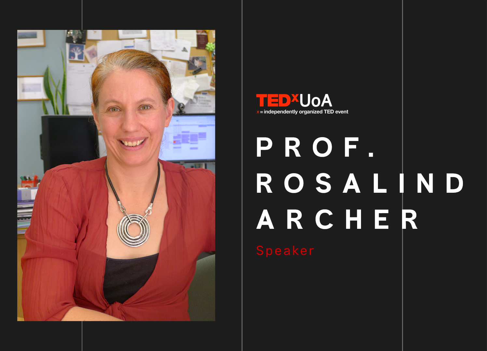
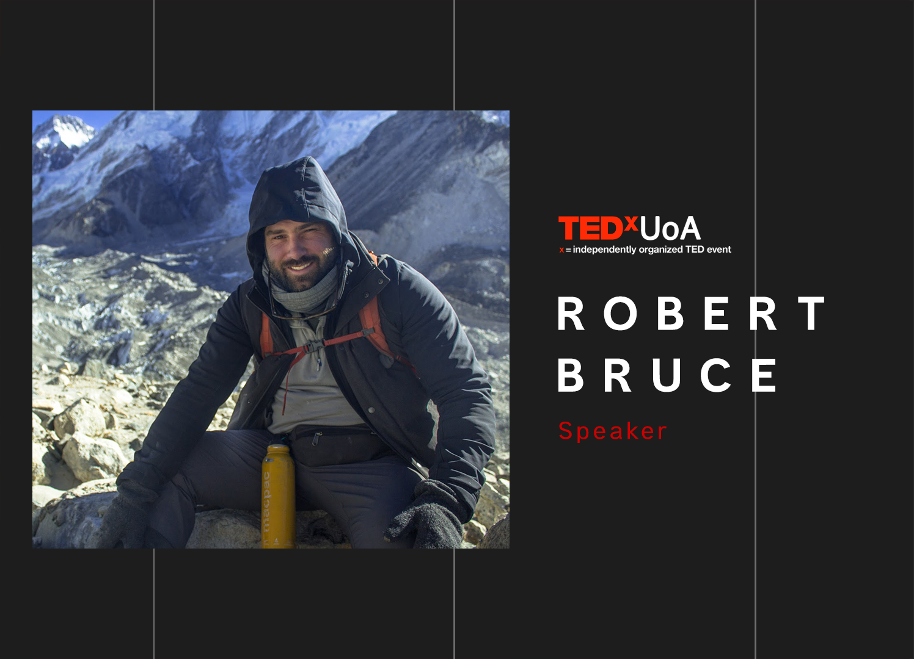
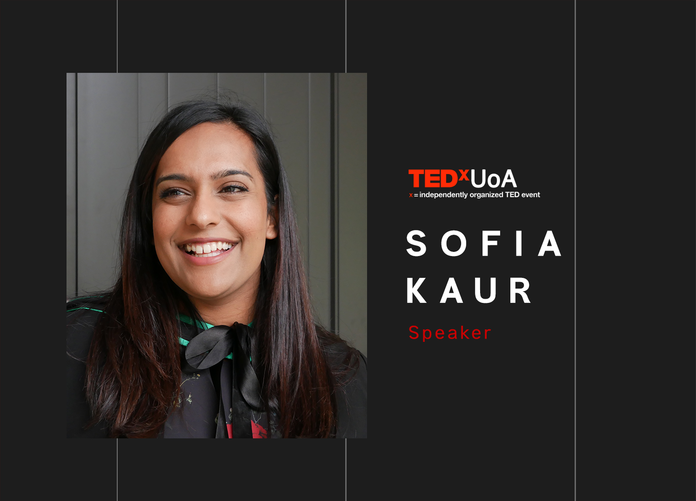
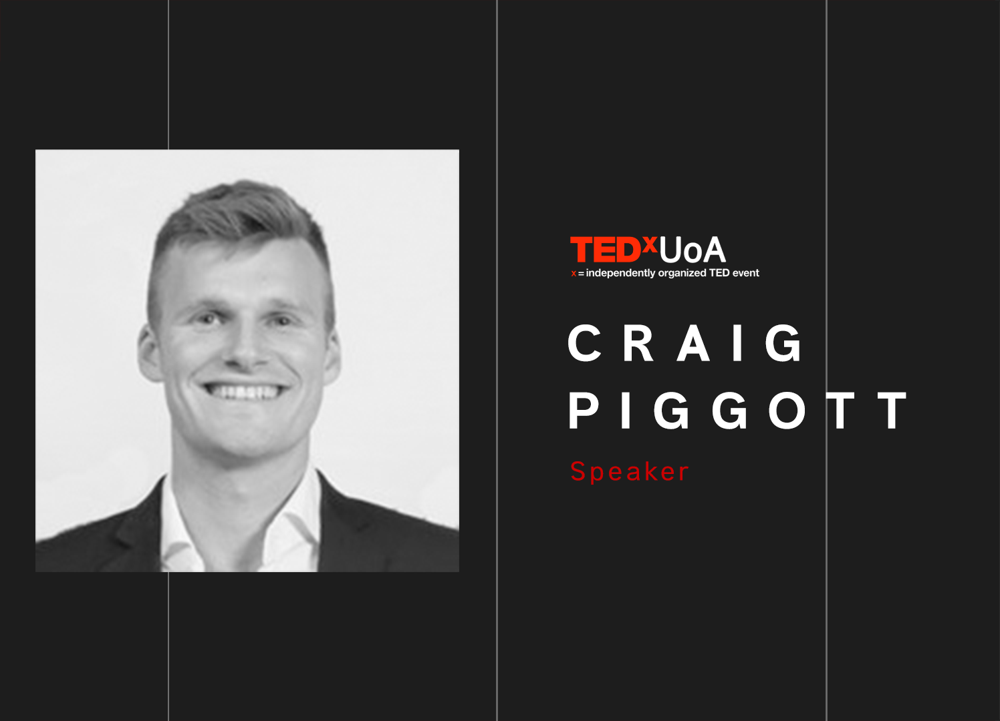
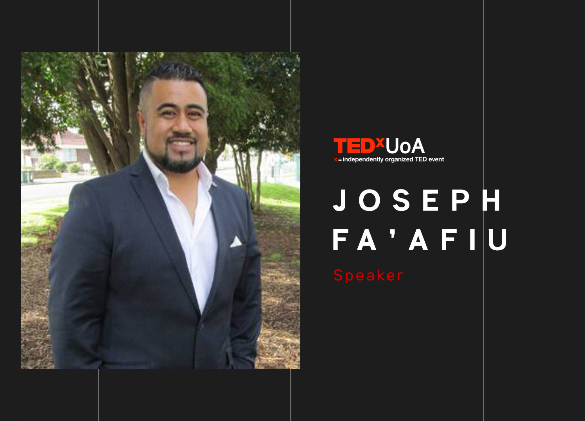

We've released our speakers line up for 2018, check them out below!
Prof. Rosalind Archer
Prof. Rosalind Archer is Head of the Department of Engineering Science and Director of the Geothermal Institute. She undertakes a broad range of work in the energy sector ranging from research using fundamental mathematics, to commercial consultancy and international aid projects. Rosalind is the first female to become a Head of Department within the Faculty of Engineering. Rosalind is leading a Faculty project to boost female enrolment to 33% by the year 2020 and she holds a chair supported by Mercury Energy.
Emily Gallagher
As a leader in the Conscious business movement, and founder of Business Coaching Company Conscious Boss, Emily Gallagher is on a mission to help change the habits, patterns & behaviors of our global community, through consciousness, social entrepreneurship & collaboration. Emily does this through her Conscious Boss Clique events across the world, coaching programmes, videos, podcast, speaking & personal philanthropic endeavours. Emily is based between NZ & the US & is passionate about taking the Conscious Boss movement global & sharing the trends in all things conscious business, living & leading.
Robert Bruce
Robert Bruce is the adventure-loving entrepreneur behind the fast-growth social enterprise adventure group called Got To Get Out. Got To Get Out’s mission is to inspire Kiwis (and new-Kiwis like international students) to get active, outdoors, exploring their backyard and making friends - all to help combat physical and mental health issues that are on the rise. Since 2015 over 3,000 people have joined a Got To Get Out activity including hundreds of (often free) hikes, and even a trek to Mt Everest Base Camp in Nepal, where Robert first came up with the idea of GTGO after following in Sir Edmund Hillary’s footsteps. Robert is passionate about socially worthwhile/purpose-driven enterprises, building communities, and using social media to get people off social media.
Sofia Kaur
Sofia is a first-gen immigrant born of Panjab, raised by the south of Tamaki Makaurau and built by her diaspora. She is a high school teacher at Onehunga High School with a particular interest in the power of identity, whakapapa and being, in and outside of the classroom. Sofia is big on community (coaching BAD, an all-girls bhangra team and heading up the Auckland chapter of the Young Sikh Professionals Network) and is a loud advocate for young people making noise and creating impact.
Craig Piggott
Craig Piggott is the CEO of Halter, a company set to revolutionise the future of farming. Craig grew up on a dairy farm in Waikato, before heading to the big smoke to complete a mechanical engineering degree at Auckland University. While working in his first role at Rocket Lab, Craig had the idea of using tracking and steering technology to control cattle movements. The idea for Halter was born. Halter now employs 25 staff across two offices in Central Auckland and Morrinsville.
Joseph Fa’afiu
Iosefo (Joseph) Fa’afiu is an immigrant from Samoa, a proud father of five wonderful boys and have been married to his Tongan/Scottish queen Lydia since April 6, 2002. He is the author for two books called “I Am Me” & “Little Poppy” both specific targeted to help Children stand up against Bullying, Peer Pressure and the Tall Poppy Syndrome in hopes to build resilience in our young children and to remind them that they are special and have a place in the world. His hope is that he can inspire and motivate others to dream big and do big in life so they to can leave this world better then when they entered it.
